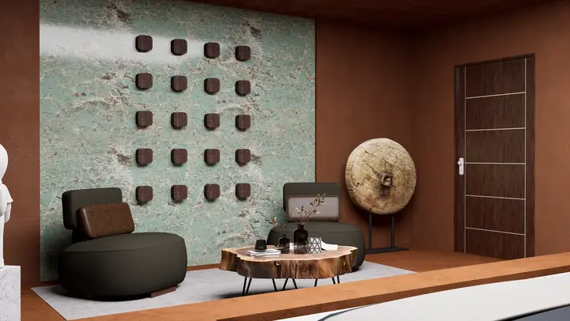
La matière comme récit
Terre, brique, pisé, pierre : des matériaux qui portent les traces d'un territoire et créent des atmosphères chaleureuses, incarnées et singulières.
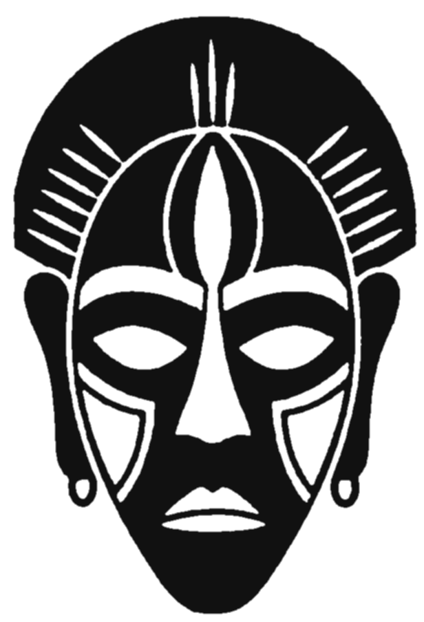
NTU. ArchitectureNous concevons des lieux qui se vivent autant qu'ils se regardent, où la terre, la brique, le claustra et la lumière font dialoguer tradition africaine et modernité.
Voir lesNous abordons chaque projet comme une composition sensible, presque instinctive, où la matière, la lumière, la couleur et le détail participent pleinement à l'identité d'un lieu. Nous réinterprétons les techniques vernaculaires africaines dans des espaces contemporains — pour une architecture profondément liée à ceux qui l'habitent.
Faites glisser pour passer de l'intention à la réalité.

Terre, brique, pisé, pierre : des matériaux qui portent les traces d'un territoire et créent des atmosphères chaleureuses, incarnées et singulières.
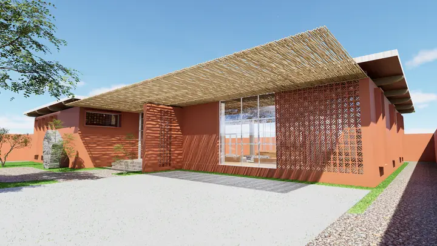
Claustras, moucharabiehs, débords de toiture : une conception bioclimatique qui filtre le soleil, ventile naturellement et dessine des ombres vivantes.
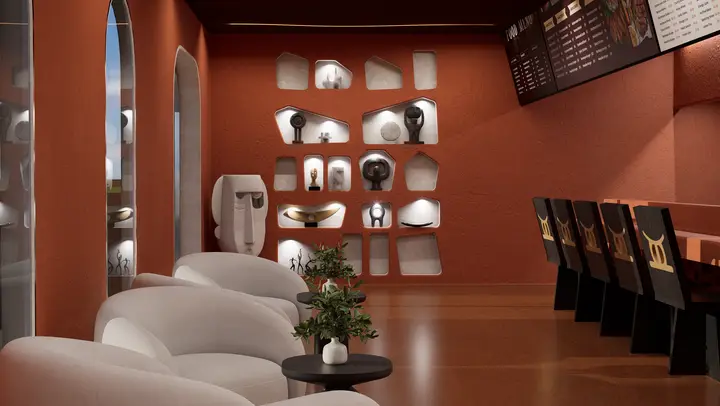
Masques, motifs, art contemporain africain : des espaces où le design d'aujourd'hui embrasse profondément ses racines et l'esprit de partage.
Nous accompagnons chaque projet de bout en bout, avec la même exigence de matière, de lumière et d'identité.
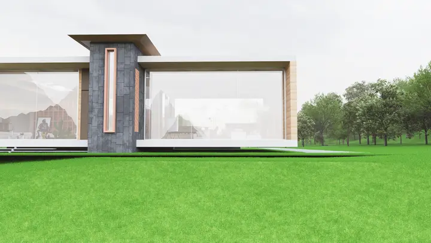
Villas, logements et équipements publics : de l'esquisse au dossier de permis.
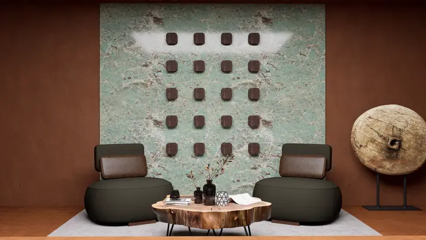
Ambiances, mobilier sur mesure et matières naturelles qui racontent un lieu.
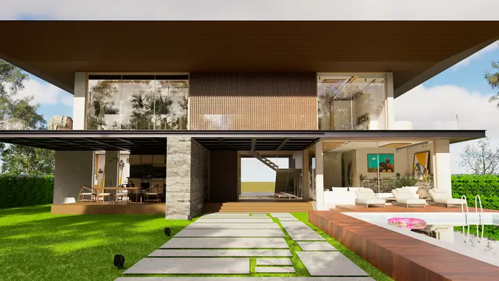
Rendus photoréalistes et illustrations pour voir un projet avant qu'il existe.
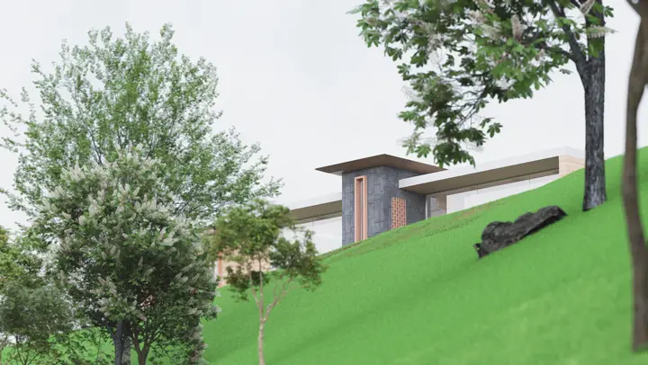
Supervision, relevés de terrain et coordination jusqu'à la livraison.
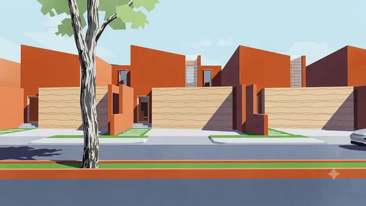
Lotissements, plans locaux d'urbanisme et programmes publics.
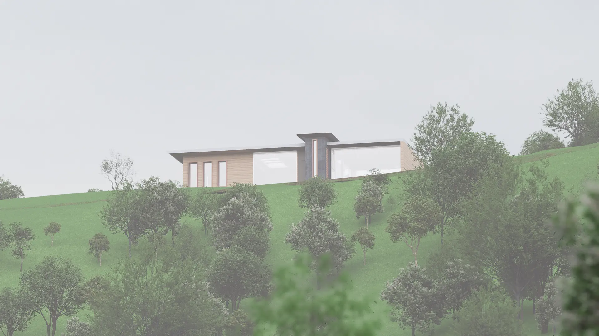
« L'architecture, c'est mettre de l'ordre dans un ordre déjà défini par la nature. »
— Kouawo Kevin, co-fondateur
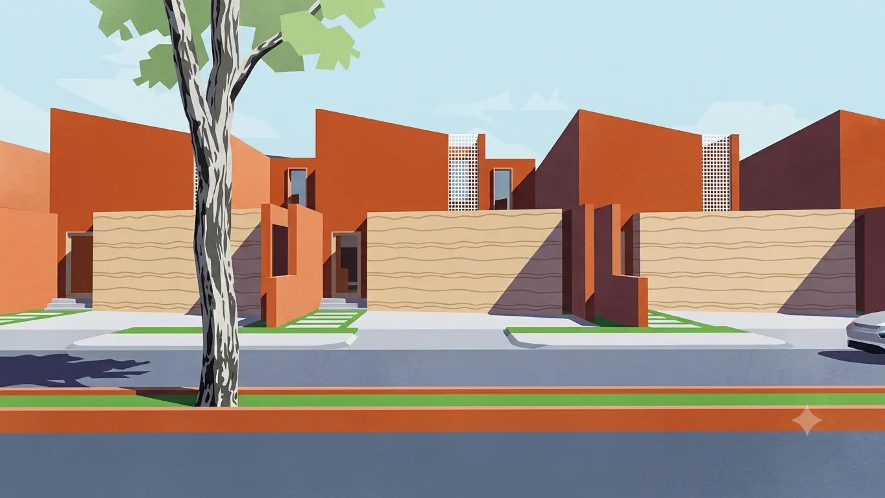
En conceptionUn havre de paix moderne : des rues spacieuses, des villas aux tons pêche et blanc coiffées de toits plats, de vastes balcons habillés de lattes de bois, des palmiers qui encadrent les allées. Plus qu'un projet immobilier, une invitation quotidienne à vivre dans un cadre lumineux et serein.
Rendus bientôt disponibles« Je suis parce que nous sommes. » Ubuntu est né d'une équipe avant d'être un cabinet.
Une villa, un intérieur, un lieu de vie ou de commerce ? Racontez-nous votre histoire — nous lui donnerons une forme.
Démarrer un projet →